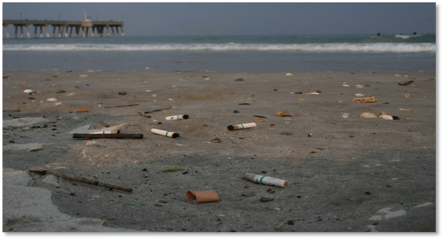

What can smoking lead to in health risks?
Cigarette smoking increases the rick of getting lung cancer.
- causes about 90% of all lung cancer deaths
- smoking causes 80% of all deaths from chronic obstructive pulonary disease
- increases risk of deaths from all causes in men and women
- 34.3 million of US adults (2017) were cigarette smokers
Secondhand Smoking, since 1964 2,500,060 nonsmokers have died from health problems caused by secondhand smoke. Our environment is also at fault due to the 267 billion cigarettes in 2015 that were smkoed in that year in the US. 1,030,640 cigarette butts were also removed from beaches.

works cited